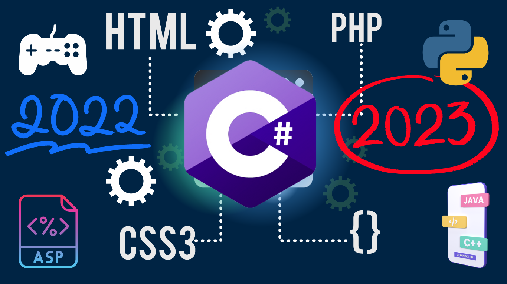
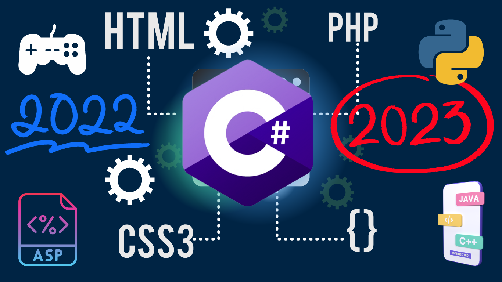

C#
C# programozási nyelv
A C# az a programozási nyelv, ami a legközvetlenebb módon tükrözi az alatta működő, minden .NET programot futtató .NET keretrendszert, valamint erősen függ is attól: nincsen nem menedzselt, natív módban futó C# program.
A primitív adattípusai objektumok, a .NET típusok megfelelői.
Szemétgyűjtést használ, valamint az absztrakcióinak többsége (osztályok, interfészek, delegáltak, kivételek…) a .NET futtatórendszert használja közvetlen módon.
A C vagy C++ nyelvhez hasonlítva a C# több korlátozást és továbbfejlesztést is tartalmaz. A lehetőségei közül néhány:
- A mutatók és a nem ellenőrzött aritmetika csak egy speciális, nem biztonságos módban (unsafe mode) használható. A legtöbb objektum-hozzáférés csak biztonságos hivatkozásokon keresztül tehető meg, és az aritmetikai műveletek debug módban túlcsordulás szempontjából ellenőrzöttek.
- Az objektumok nem szabadíthatók fel közvetlen módon, ehelyett a szemétgyűjtő szabadítja fel őket, mikor már nincs rájuk hivatkozás. Ez a módszer kizárja a nem létező objektumokra való hivatkozás lehetőségét.
- A destruktorok (~) elérhetőek. A megfelelően megírt IDisposable interfész (Disposable programozási minta), aminek a lefutását garantálja using blokk, együtt kikényszerítheti az azonnali felszabadítást az osztályon belüli natív erőforrások esetében. A nem natív erőforrások felszabadítását ebben az esetben is a szemétgyűjtő (Garbage Collector) végzi. A finalizerek szintén rendelkezésre állnak, de nem váltanak ki azonnali felszabadítást. Finalizer a Dispose eljárás javasolt implementációs módozatában nem fut le, mivel az ajánlás szerint a szemétgyűjtőt utasítani kell a finalizer hívás kihagyására.
- A nyelv csak egyszeres öröklődést támogat, de egy osztály több interfészt is megvalósíthat.
- A C# sokkal típusbiztosabb, mint a C++. Az egyetlen implicit konverzió a biztonságos konverzió, úgy mint az egészek tágabb intervallumba konvertálása vagy a leszármazott osztályok alaposztályba konvertálása. Nincs implicit konverzió az egészek és a logikai típus (boolean) között, a felsorolás tagok és az egészek között. Nincsenek void mutatók (bár az Object osztályra mutató mutatók hasonlóak), valamint bármely, a felhasználó által definiált implicit konverziót explicit módon meg kell jelölni.
- A felsorolás adattagjai a saját névterükben helyezkednek el.
- A 2.0-s verziótól felfelé már rendelkezik a generikus programozás néhány eszközével.
- Tulajdonságok (Properties) használhatók, amelyek úgy tesznek lehetővé kódfuttatást mezők beállításakor és olvasásakor, hogy közben az adattagok szintaxisát használja.
CAD
SAP
Órarend